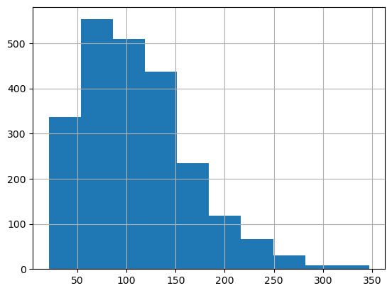

SEED = 2306406Fine-tuning pipeline: the essentials
Load and preprocess your data
import pandas as pd
url = "https://raw.githubusercontent.com/yiweiluo/GWStance/refs/heads/master/3_stance_detection/1_MTurk/full_annotations.tsv"
df_raw = pd.read_csv(url, sep = "\t") # Careful here, this document is a tsv (separator="\t" and not a csv, separator = ",")
df_raw.head()df = df_raw.loc[:,["sent_id", "sentence", "MACE_pred", "av_rating"]]
df = df.rename(columns={"MACE_pred" : "label_text"}) # Rename MACE_pred for conveniency
df| sent_id | sentence | label_text | av_rating | |
|---|---|---|---|---|
| 0 | s0 | Global warming is a hoax. | disagrees | -1.000 |
| 1 | s1 | Alarming levels of sea level rise are predicte... | neutral | 0.375 |
| 2 | s2 | Over the past several years, the United States... | neutral | 0.000 |
| 3 | s3 | Global warming is happening and it will be dan... | agrees | 1.000 |
| 4 | s4 | Some icebergs are cute. | neutral | 0.000 |
| ... | ... | ... | ... | ... |
| 2295 | t5 | Agriculture, in general, is responsible for a ... | neutral | 0.375 |
| 2296 | t6 | Hiring a White House "climate change czar" wou... | agrees | 0.750 |
| 2297 | t7 | More carbon is being released than stored. | neutral | 0.250 |
| 2298 | t8 | New laws are needed to crack down on climate a... | disagrees | -0.750 |
| 2299 | t9 | Scaring young people young people into believi... | disagrees | -0.750 |
2300 rows × 4 columns
df.groupby(["label_text"]).size()label_text
agrees 871
disagrees 441
neutral 988
dtype: int64df["ID"] = [f'ID-{i:04}' for i in range(len(df))]df["sentence-len"] = df["sentence"].apply(len)
df["sentence-len"].hist()
df["sentence-len"].describe()count 2300.000000
mean 109.890435
std 56.251317
min 21.000000
25% 70.000000
50% 100.000000
75% 145.000000
max 347.000000
Name: sentence-len, dtype: float64
def preprocess_text(text: str):
if not(isinstance(text, str)):
return pd.NA
return (
text
.replace("``", '"')
.replace("''", '"')
.replace(" ,", ",")
.replace(" .", ".")
.replace(" !", "!")
.replace(" ?", "?")
.replace(" :", ":")
.replace(" 's", "'s")
)
df["sentence-preprocessed"] = df["sentence"].apply(preprocess_text)df.groupby("sentence").size().value_counts()1 2034
2 8
50 5
Name: count, dtype: int64df_no_duplicates = df.loc[~df["sent_id"].str.startswith("s"), :]
df_no_duplicates.groupby("sentence").size().value_counts()1 2034
2 8
Name: count, dtype: int64df_clean = pd.read_csv("./data/dataset-no-duplicates.csv")
df_clean| sent_id | sentence | label_text | av_rating | ID | sentence-preprocessed | |
|---|---|---|---|---|---|---|
| 0 | t0 | Warmer-than-normal sea surface temperatures ar... | agrees | 0.625 | ID-0005 | Warmer-than-normal sea surface temperatures ar... |
| 1 | t1 | We will continue to rely in part on fossil fue... | neutral | 0.000 | ID-0006 | We will continue to rely in part on fossil fue... |
| 2 | t10 | The actual rise in sea levels measured only 1.... | neutral | 0.000 | ID-0007 | The actual rise in sea levels measured only 1.... |
| 3 | t11 | Claims of global warming have been greatly exa... | disagrees | -1.000 | ID-0008 | Claims of global warming have been greatly exa... |
| 4 | t12 | The Intergovernmental Panel on Climate Change ... | neutral | -0.125 | ID-0009 | The Intergovernmental Panel on Climate Change ... |
| ... | ... | ... | ... | ... | ... | ... |
| 2036 | t5 | Agriculture, in general, is responsible for a ... | neutral | 0.375 | ID-2295 | Agriculture, in general, is responsible for a ... |
| 2037 | t6 | Hiring a White House "climate change czar" wou... | agrees | 0.750 | ID-2296 | Hiring a White House "climate change czar" wou... |
| 2038 | t7 | More carbon is being released than stored. | neutral | 0.250 | ID-2297 | More carbon is being released than stored. |
| 2039 | t8 | New laws are needed to crack down on climate a... | disagrees | -0.750 | ID-2298 | New laws are needed to crack down on climate a... |
| 2040 | t9 | Scaring young people young people into believi... | disagrees | -0.750 | ID-2299 | Scaring young people young people into believi... |
2041 rows × 6 columns
from datasets import Dataset, DatasetDict
ds = Dataset.from_pandas(df_clean)
temp = ds.train_test_split(test_size = 0.3, shuffle=True, seed=SEED)
ds_train = temp["train"]
temp = temp["test"].train_test_split(test_size = 0.5, shuffle = True, seed=SEED)
ds_dev = temp["train"]
ds_test = temp["test"]
dsd = DatasetDict({
"train": ds_train,
"dev": ds_dev,
"test": ds_test
})
dsdDatasetDict({
train: Dataset({
features: ['sent_id', 'sentence', 'label_text', 'av_rating', 'ID', 'sentence-preprocessed'],
num_rows: 1428
})
dev: Dataset({
features: ['sent_id', 'sentence', 'label_text', 'av_rating', 'ID', 'sentence-preprocessed'],
num_rows: 306
})
test: Dataset({
features: ['sent_id', 'sentence', 'label_text', 'av_rating', 'ID', 'sentence-preprocessed'],
num_rows: 307
})
})Choose and load a model
from transformers import AutoModelForSequenceClassification
labels = list(df_clean["label_text"].unique())
num_labels = len(labels)
id2label = {id:label for id, label in enumerate(labels)}
label2id = {label:id for id, label in enumerate(labels)}
MODEL_NAME = "google-bert/bert-base-uncased"
model = AutoModelForSequenceClassification.from_pretrained(
MODEL_NAME,
num_labels=num_labels,
id2label=id2label,
label2id=label2id,
)Loading weights: 100%|██████████| 199/199 [00:00<00:00, 8499.57it/s]
BertForSequenceClassification LOAD REPORT from: google-bert/bert-base-uncased
Key | Status |
-------------------------------------------+------------+-
cls.seq_relationship.bias | UNEXPECTED |
cls.predictions.bias | UNEXPECTED |
cls.seq_relationship.weight | UNEXPECTED |
cls.predictions.transform.LayerNorm.bias | UNEXPECTED |
cls.predictions.transform.LayerNorm.weight | UNEXPECTED |
cls.predictions.transform.dense.bias | UNEXPECTED |
cls.predictions.transform.dense.weight | UNEXPECTED |
classifier.bias | MISSING |
classifier.weight | MISSING |
Notes:
- UNEXPECTED :can be ignored when loading from different task/architecture; not ok if you expect identical arch.
- MISSING :those params were newly initialized because missing from the checkpoint. Consider training on your downstream task.from transformers import AutoTokenizer
tokenizer = AutoTokenizer.from_pretrained(MODEL_NAME)def preprocess_dataset(row: dict):
tokenized_entry = tokenizer(
row["sentence-preprocessed"],
truncation = True,
padding = "max_length",
max_length = 400
)
return {
**row.copy(),
"labels": int(label2id[row["label_text"]]),
**tokenized_entry
}
dsd = dsd.map(preprocess_dataset)
dsd = dsd.with_format("torch", device=model.device)
dsd = dsd.select_columns(["ID", "labels", "input_ids", "token_type_ids", "attention_mask"])
dsdMap: 100%|██████████| 1428/1428 [00:00<00:00, 5025.82 examples/s]
Map: 100%|██████████| 306/306 [00:00<00:00, 5282.24 examples/s]
Map: 100%|██████████| 307/307 [00:00<00:00, 5275.38 examples/s]DatasetDict({
train: Dataset({
features: ['ID', 'labels', 'input_ids', 'token_type_ids', 'attention_mask'],
num_rows: 1428
})
dev: Dataset({
features: ['ID', 'labels', 'input_ids', 'token_type_ids', 'attention_mask'],
num_rows: 306
})
test: Dataset({
features: ['ID', 'labels', 'input_ids', 'token_type_ids', 'attention_mask'],
num_rows: 307
})
})from transformers import TrainingArguments, Trainer
training_arguments = TrainingArguments(
bf16=True,
# Hyperparameters
num_train_epochs = 5,
learning_rate = 5e-5,
weight_decay = 0.0,
warmup_steps = 0.0,
# Second order hyperparameters
per_device_train_batch_size = 4,
per_device_eval_batch_size = 4,
gradient_accumulation_steps = 8,
# Metrics
# metric_for_best_model="f1_macro", # TODO implement F1 as metric: MOVE TO EXPERT
# Pipe
output_dir = "./models/training",
eval_strategy = "steps" , eval_steps = 0.05,
logging_strategy = "steps", logging_steps = 0.05,
save_strategy = "steps" , save_steps = 0.05,
load_best_model_at_end = True,
save_total_limit = 2,
dataloader_pin_memory = False,
disable_tqdm = False,
seed=SEED
)
ds_train = dsd["train"].train_test_split(0.15, seed = SEED)
trainer = Trainer(
model = model,
args = training_arguments,
train_dataset=ds_train["train"],
eval_dataset=ds_train["test"], # subset of ds_train used for in-training performance assessment
)trainer.train()# Takes about 30 mins on CPU and 1 min on GPUimport torch
import numpy as np
from tqdm import tqdm
y_gold_standard = []
y_pred = []
model.eval()
model = model.bfloat16()
for batch in tqdm(dsd["dev"].batch(8)):
y_gold_standard += [batch["labels"].cpu().numpy()]
with torch.no_grad():
logits = model(input_ids = batch["input_ids"], attention_mask = batch["attention_mask"]).logits.cpu().softmax(1).float().numpy()
y_pred += [np.argmax(logits, axis=1)]
y_gold_standard = np.concat(y_gold_standard)
y_pred = np.concat(y_pred)
[]Batching examples: 100%|██████████| 20/20 [00:00<00:00, 2650.09 examples/s]
0%| | 0/3 [00:00<?, ?it/s]tensor([0, 1, 0, 0, 2, 2, 0, 1]) 33%|███▎ | 1/3 [00:11<00:22, 11.07s/it]tensor([0, 0, 2, 1, 0, 1, 1, 2]) 67%|██████▋ | 2/3 [00:21<00:10, 10.49s/it]tensor([1, 1, 1, 1])100%|██████████| 3/3 [00:26<00:00, 8.83s/it]from sklearn.metrics import classification_report
print(classification_report(
y_true = [id2label[y] for y in y_gold_standard],
y_pred = [id2label[y] for y in y_pred]
)) precision recall f1-score support
agrees 0.74 0.61 0.67 122
disagrees 0.59 0.38 0.46 58
neutral 0.62 0.83 0.71 126
accuracy 0.66 306
macro avg 0.65 0.61 0.62 306
weighted avg 0.67 0.66 0.65 306
list(id2label.values())['agrees', 'neutral', 'disagrees']